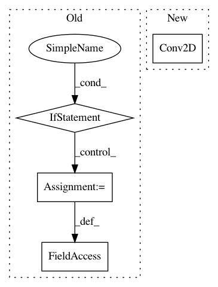

a6819ac67444b66143ab8e0cad8a42cb7635730d,autokeras/blocks/basic.py,ResNetBlock,build,#ResNetBlock#Any#Any#,531
Before Change
if pretrained is None:
pretrained = hp.Boolean("pretrained", default=False)
if not pretrained:
self.input_tensor = input_node
self.input_shape = None
model = super().build(hp)
return model.outputs
// Use pretrained weights.
// Do not use "version" as hp name, which is used in super class.
version = hp.Choice("pretrained_version",
list(RESNET_PRETRAINED.keys()))
pretrained_model = RESNET_PRETRAINED[version](weights="imagenet",
After Change
if input_node.shape[3] == 1:
input_node = layers.Concatenate()([input_node] * 3)
if input_node.shape[3] != 3:
input_node = layers.Conv2D(filters=3,
kernel_size=1,
padding="same")(input_node)
if pretrained:
model = self.models[version](
weights="imagenet",
In pattern: SUPERPATTERN
Frequency: 3
Non-data size: 4
Instances
Project Name: jhfjhfj1/autokeras
Commit Name: a6819ac67444b66143ab8e0cad8a42cb7635730d
Time: 2020-07-17
Author: haifengj@google.com
File Name: autokeras/blocks/basic.py
Class Name: ResNetBlock
Method Name: build
Project Name: dmlc/gluon-cv
Commit Name: ea5306a4e8fc9700022f93c3731fb1711e248a8e
Time: 2019-08-09
Author: jerryzh.cn@gmail.com
File Name: gluoncv/model_zoo/resnext.py
Class Name: Block
Method Name: __init__
Project Name: dmlc/gluon-cv
Commit Name: 88f5086454759b4e213013cb1bc177df183b43b2
Time: 2018-07-18
Author: 13162287+ijkguo@users.noreply.github.com
File Name: gluoncv/model_zoo/resnetv1b.py
Class Name: BottleneckV1b
Method Name: __init__